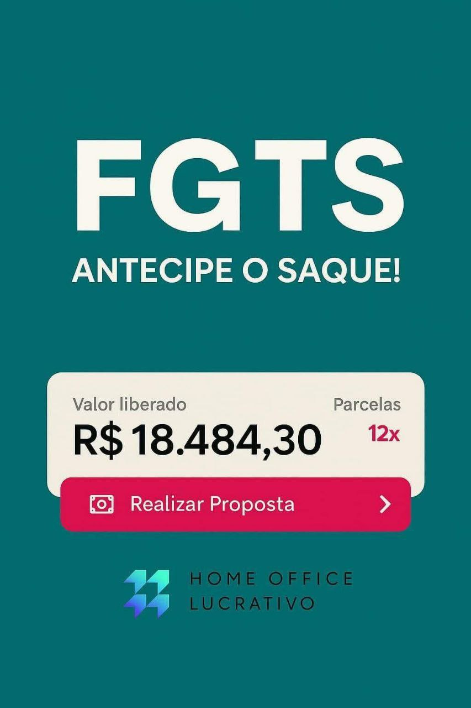

Com a liberação do saque, você pode antecipar valores e usar para realizar sonhos, quitar dívidas ou investir no que realmente importa!"
✨ Benefícios destacados:
✅ Dinheiro liberado de forma rápida e prática
✅ Atendimento seguro e personalizado
✅ Use seu FGTS para organizar sua vida financeira
"Não deixe seu dinheiro parado! Clique no botão abaixo e fale agora mesmo no WhatsApp para entender como utilizar seu FGTS de forma inteligente e sem burocracia."
"FGTS liberado é mais poder de escolha na sua mão. Aproveite!"
 💬 Fazer Simulação via WhatsAppO Saque-Aniversário permite que você retire uma parte do seu FGTS todos os anos, no mês do seu aniversário. Ao optar por essa modalidade, você pode antecipar até 10 parcelas com taxas reduzidas e sem burocracia.
💬 Fazer Simulação via WhatsAppVocê será redirecionado com uma mensagem automática.
Nome, CPF e valor aproximado do saldo FGTS.
Em poucos minutos, você saberá quanto pode antecipar.